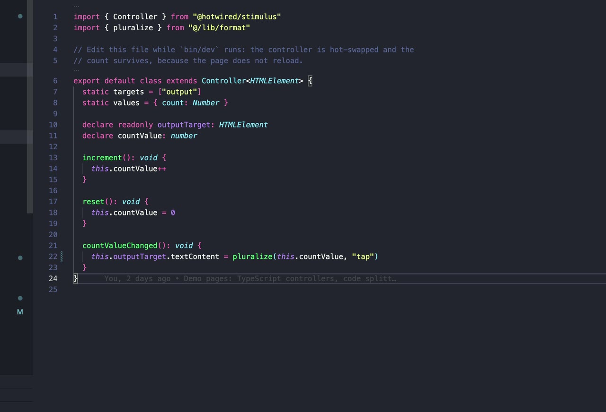
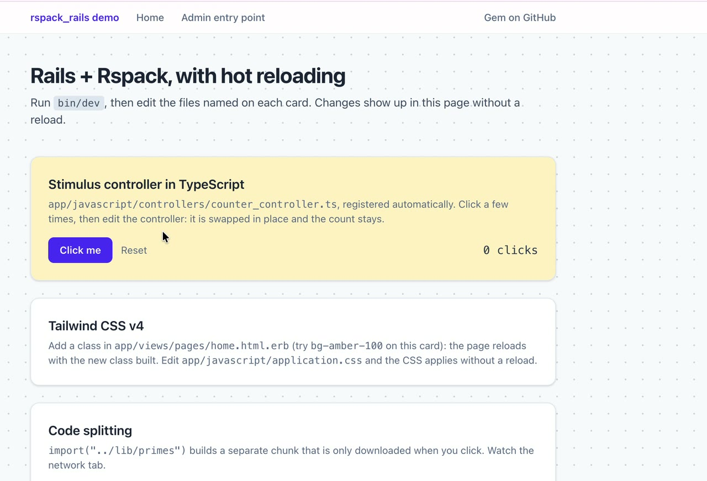

Rspack hot reloading for Rails
For new Rails apps: every save lands in the open page.
rails new myapp -m
https://raw.githubusercontent.com/tungnt1203/rspack_rails/main/template.rb
1.0 Create the app
The template adds the gem, asks five questions and builds once.
$ rails new myapp -m …/rspack_rails/main/template.rb
Add Stimulus with controller autoloading? (y/N) y
Add TypeScript type checking? (y/N) y
Add React with Fast Refresh? (y/N) n
Add Tailwind CSS v4? (y/N) y
Add Sass? (y/N) n
rspack_rails is set up with stimulus, typescript, tailwind.
Run bin/dev to start.2.0 Save, and the page follows
Under bin/dev, scripts and styles swap in place. A view edit reloads the page, its new classes already built.



bg-amber-100.
3.0 Ask the doctor
bin/rails rspack:doctor checks the setup and says what to fix. An error exits with status 1, so CI can run it.
| Check | Result | Detail |
|---|---|---|
| Node.js | ✓ | v26.5.1 (rspack needs ^20.19.0 || >=22.12.0) |
| @rspack/core | ✓ | 2.3.2 |
| Layout | ✓ | application.html.erb uses rspack_javascript_tag |
| Dockerfile | ✓ | installs Node.js and node modules |
| Dev server | ! | not running at http://localhost:3036 |
# Install Node.js: assets:precompile runs rspack (rspack_rails)
ARG NODE_VERSION=22.12.0
RUN curl -sL …/node-build/archive/master.tar.gz | tar xz -C /tmp/ && …
# Install node modules
COPY package.json package-lock.json ./
RUN npm ci
RUN SECRET_KEY_BASE_DUMMY=1 ./bin/rails assets:precompile
RUN rm -rf node_modules4.0 Ship with Kamal
Node.js joins the build stage; the final image ships without it.
Dev containers get Node.js and port 3036 too.
Tested on every pull request
Rails 7.2
Rails 8.1
A new app on each, built and precompiled
- Ruby
- 3.2 or newer
- Node.js
- 20.19 or 22.12 and newer
- Package manager
- bun, yarn, pnpm or npm, read from the lockfile
- Asset pipeline
- Propshaft or Sprockets
Start at stage one
Already have an app? bundle add rspack_rails, then bin/rails rspack:install.
rails new myapp -m
https://raw.githubusercontent.com/tungnt1203/rspack_rails/main/template.rb